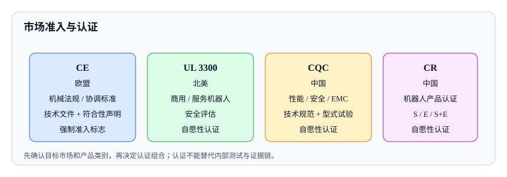

<script type="application/json" id="tb-manifest">
{
  "schema": "tb/1",
  "id": "L-003-006",
  "title": "市场准入与认证：CE、UL、CQC 与 CR",
  "module": "M03",
  "concepts": [
    "market-access-certification"
  ],
  "target_level": "L3",
  "minutes": 45,
  "objectives": [
    "能区分 CE、UL、CQC 与 CR 的性质与适用市场",
    "能列出认证所需的技术文件与证据",
    "能倒排认证计划并识别常见缺口"
  ],
  "prerequisites": [
    "robot-safety-standards"
  ],
  "exercises": [
    "EX-020-01",
    "EX-020-02"
  ],
  "resources": [
    "R-CE-MACHINERY",
    "R-CE-MARKING",
    "R-UL-3300",
    "R-CQC-ROBOT",
    "R-CR-CHINA"
  ],
  "objective_map": {
    "O1": [
      "EX-020-01"
    ],
    "O2": [
      "EX-020-02"
    ],
    "O3": [
      "EX-020-02"
    ]
  }
}
</script>
<article class="tb-lesson">
  <h1>市场准入与认证：CE、UL、CQC 与 CR</h1>
  <section>
    <p>销售说：“这款移动服务机器人要卖到欧洲和中国，客户还问有没有 UL。你帮我把 CE、UL、CQC、CR 都办了吧。”测试负责人打开日程，发现距离展会只有六周，而技术文件、风险评估、EMC 测试、软件安全评估都还没开始。更麻烦的是，销售把 CR 说成“强制认证”，把 CE 说成“质量认证”，把 UL 说成“欧盟要求”。</p>
    <p>认证是市场准入的工具，不是质量的终点。不同市场的规则不同，认证的性质、证据和流程也不同。本课把 CE、UL 3300、CQC 和 CR 放在一张地图上，说明各自管什么、需要什么、以及怎么排计划。</p>
  </section>
  <section>
    <h2>一、认证地图</h2>
    <table>
      <thead>
        <tr><th>认证</th><th>市场</th><th>性质</th><th>关注点</th></tr>
      </thead>
      <tbody>
        <tr><td>CE</td><td>欧盟/EEA</td><td>强制准入标志</td><td>适用指令/法规、协调标准、技术文件、符合性声明</td></tr>
        <tr><td>UL 3300</td><td>北美</td><td>安全评估/认证</td><td>商用与服务机器人、移动安全、电气与火灾风险</td></tr>
        <tr><td>CQC</td><td>中国</td><td>自愿性认证</td><td>服务机器人性能、安全、EMC、信息安全</td></tr>
        <tr><td>CR</td><td>中国</td><td>自愿性认证</td><td>机器人产品安全/EMC，S、E、S+E 类型</td></tr>
      </tbody>
    </table>
  </section>
  <figure>
    
    <figcaption>先确认目标市场和产品类别，再决定认证组合；认证不能替代内部测试与证据链。</figcaption>
  </figure>
  <section>
    <h2>二、CE：欧盟强制准入</h2>
    <p>CE 标志表示产品符合适用的欧盟法规，可以在欧盟/EEA 市场自由流通。它不是质量标志，也不是“欧盟认证机构发的证书”。CE 的核心是制造商自我声明，但是否需要公告机构参与，取决于产品类别和适用指令/法规。</p>
    <p>机械产品通常涉及机械指令或机械法规、EMC 指令、低电压指令、无线电设备指令等。项目要做的不是“办一张 CE 证书”，而是：</p>
    <ul>
      <li>确定适用的指令/法规和协调标准。</li>
      <li>做风险评估，确认基本健康与安全要求。</li>
      <li>完成测试和验证，形成技术文件。</li>
      <li>编写符合性声明，加贴 CE 标志。</li>
      <li>建立市场监督和事故报告机制。</li>
    </ul>
    <p>技术文件通常包括：产品描述、图纸、BOM、风险评估、标准清单、测试报告、说明书、警示标识、符合性声明。技术文件要保存到法规要求的期限，并能随时提供给监管机构。</p>
  </section>
  <section>
    <h2>三、UL 3300：北美商用与服务机器人</h2>
    <p>ANSI/CAN/UL 3300 面向服务、通信、信息、教育、娱乐类机器人（SCIEE），关注移动安全、电气与火灾风险、外部操作、人机交互和弱势人群。UL Solutions 提供评估和认证服务，OSHA 已将 UL 3300 纳入 NRTL 项目认可标准之一。</p>
    <p>UL 3300 不是欧盟要求，也不能替代 CE。它主要服务北美市场，尤其是商用和公共场所的机器人。认证通常需要：产品描述、风险评估、关键零部件清单、电气安全测试、移动安全测试、说明书和标识。具体范围以 UL 的评估大纲和最新标准为准。</p>
  </section>
  <section>
    <h2>四、CQC：国内服务机器人认证</h2>
    <p>CQC 是中国质量认证中心的自愿性认证。与服务机器人相关的业务包括：</p>
    <ul>
      <li><strong>性能认证：</strong>例如轮式服务机器人性能认证，依据 CQC 技术规范。</li>
      <li><strong>电气安全与 EMC 认证：</strong>覆盖相关国家标准。</li>
      <li><strong>信息安全认证：</strong>针对服务机器人信息安全。</li>
    </ul>
    <p>CQC 认证通常包括型式试验、初始工厂检查（部分业务）和获证后监督。申请前要确认产品类别、适用技术规范、测试项目和工厂检查要求。CQC 是自愿性认证，不是 CCC 强制认证。</p>
  </section>
  <section>
    <h2>五、CR：中国机器人认证</h2>
    <p>CR（China Robot Certification）是中国机器人检测认证联盟管理的自愿性认证，分为安全（S）、EMC（E）和安全+EMC（S+E）类型。它面向工业机器人、服务机器人、AGV、无人机、物流机器人等产品。</p>
    <p>CR 是自愿性认证，不是强制 CCC。CCC 是按目录强制实施的认证制度，两者不能混为一谈。CR 认证通常需要：产品资料、风险评估、安全与 EMC 测试、工厂检查（部分模式）和获证后监督。具体模式（A 或 B）取决于产品类别。</p>
  </section>
  <section>
    <h2>六、认证流程</h2>
    <ol>
      <li><strong>确定目标市场与产品类别：</strong>欧盟、北美、中国，以及产品属于机械、服务机器人、AGV 还是其他。</li>
      <li><strong>确定适用法规与标准：</strong>CE 指令/法规、UL 3300、CQC 技术规范、CR 实施规则。</li>
      <li><strong>差距分析：</strong>对照标准检查设计、文件、测试和标识，列出缺口。</li>
      <li><strong>补测试与文件：</strong>安全、EMC、性能、软件、网络安全（如适用）。</li>
      <li><strong>提交申请与样品：</strong>选择认证机构，提交技术文件和样品。</li>
      <li><strong>测试与工厂检查：</strong>按认证规则执行。</li>
      <li><strong>发证与监督：</strong>获证后按要求做监督检查和变更管理。</li>
    </ol>
    <p>认证计划要倒排：先确定市场和标准，再安排测试和文件，最后才是递交。顺序反了就会反复补证据。</p>
  </section>
  <section>
    <h2>七、实例：移动服务机器人出口欧盟 + 中国</h2>
    <p>产品：园区移动服务机器人，带机械臂和语音交互。目标市场：欧盟和中国商用场景。</p>
    <table>
      <thead>
        <tr><th>市场</th><th>认证/合规</th><th>关键证据</th></tr>
      </thead>
      <tbody>
        <tr><td>欧盟</td><td>CE（机械、EMC、低电压/无线电等适用指令）</td><td>风险评估、协调标准清单、测试报告、技术文件、符合性声明</td></tr>
        <tr><td>欧盟</td><td>ISO 12100、ISO 3691-4、ISO 13482、ISO 13849-1 等</td><td>安全功能验证、移动安全测试、功能安全证据</td></tr>
        <tr><td>中国</td><td>CQC 性能/安全/EMC（按需）</td><td>技术规范、型式试验报告、工厂检查</td></tr>
        <tr><td>中国</td><td>CR 安全/EMC（按需）</td><td>实施规则、测试报告、工厂检查</td></tr>
        <tr><td>北美（如需要）</td><td>UL 3300</td><td>评估大纲、电气/移动安全测试、说明书</td></tr>
      </tbody>
    </table>
    <p>六周内不可能完成全部认证。合理的做法是：先确认哪些认证是合同或市场准入的硬要求，优先完成 CE 技术文件和关键测试；CQC/CR 按客户订单排期；UL 3300 如果北美订单未确认，先做差距分析，不盲目送样。</p>
  </section>
  <section>
    <h2>八、常见误区</h2>
    <ul>
      <li><strong>把 CE 当质量认证。</strong>CE 是合规标志，不是质量评级。</li>
      <li><strong>把 CR 当强制 CCC。</strong>CR 是自愿性认证，CCC 按目录强制。</li>
      <li><strong>把 UL 当欧盟要求。</strong>UL 3300 主要面向北美。</li>
      <li><strong>没有差距分析就送样。</strong>测试失败后反复整改，浪费时间和费用。</li>
      <li><strong>技术文件不完整。</strong>有测试报告但缺少风险评估、标准清单或符合性声明。</li>
      <li><strong>认证后不做变更管理。</strong>产品变更未评估，证书失效。</li>
    </ul>
  </section>
  <section>
    <h2>九、检查清单</h2>
    <ul>
      <li>目标市场和产品类别是否明确？</li>
      <li>适用法规、标准和认证类型是否列出？</li>
      <li>是否做了差距分析，列出测试和文件缺口？</li>
      <li>技术文件是否包含风险评估、标准清单、测试报告和符合性声明？</li>
      <li>认证计划是否倒排，关键路径是否可行？</li>
      <li>是否区分强制与自愿、不同市场的认证？</li>
      <li>获证后是否有变更管理和监督检查计划？</li>
    </ul>
  </section>
  <section>
    <h2>八、认证时间线示例</h2>
    <p>假设距离展会 12 周，目标欧盟 CE + 国内 CQC/CR。一个可执行的时间线：</p>
    <table>
      <thead>
        <tr><th>周次</th><th>CE</th><th>国内认证</th><th>内部测试</th></tr>
      </thead>
      <tbody>
        <tr><td>1–2</td><td>确定指令/法规和协调标准</td><td>确认 CQC/CR 范围</td><td>风险评估、差距分析</td></tr>
        <tr><td>3–5</td><td>补技术文件、风险评估</td><td>准备技术规范资料</td><td>安全、EMC、性能测试</td></tr>
        <tr><td>6–8</td><td>送样/测试、整改</td><td>送样/型式试验</td><td>回归、缺陷修复</td></tr>
        <tr><td>9–10</td><td>符合性声明、CE 标识</td><td>工厂检查（如适用）</td><td>认证问题整改</td></tr>
        <tr><td>11–12</td><td>技术文件归档、市场监督准备</td><td>获证、监督检查计划</td><td>发布评审、回滚演练</td></tr>
      </tbody>
    </table>
    <p>这个时间线假设测试一次通过、没有重大整改。现实中常见延迟包括：EMC 不过、风险评估缺项、说明书警示语不合规、工厂检查发现不一致。排期时至少留 20%–30% 缓冲。</p>
    <p>如果时间不够，正确的做法是缩小市场范围或推迟展会，而不是跳过测试或伪造文件。认证机构会对文件和样品做一致性检查，临时补材料往往更慢。</p>
  </section>
  <section>
    <h2>九、评审与面试追问</h2>
    <ul>
      <li><strong>问：CE 是证书吗？</strong>答：CE 是制造商符合性声明和标志，不是某个机构发的“质量证书”；是否需要公告机构取决于产品类别。</li>
      <li><strong>问：CR 和 CCC 的区别？</strong>答：CR 是中国机器人自愿性认证；CCC 是按目录强制实施的认证，两者性质不同。</li>
      <li><strong>问：UL 3300 能替代 CE 吗？</strong>答：不能。UL 3300 主要面向北美，CE 面向欧盟，适用法规和证据不同。</li>
      <li><strong>问：CQC 有哪些机器人相关业务？</strong>答：服务机器人性能、电气安全与 EMC、信息安全等，具体以 CQC 公布的技术规范和业务范围为准。</li>
      <li><strong>问：认证后产品改了怎么办？</strong>答：走变更管理，评估是否影响证书；重大变更可能需要重新测试或申请变更。</li>
    </ul>
  </section>
  <section>
    <h2>十、认证资料清单</h2>
    <ul>
      <li>产品描述、预期用途、使用限制、目标市场。</li>
      <li>风险评估与危险清单。</li>
      <li>适用标准清单及版本，附差距分析。</li>
      <li>测试报告：安全、EMC、性能、软件/网络安全（如适用）。</li>
      <li>技术文件：图纸、BOM、关键零部件清单、说明书、警示标识。</li>
      <li>符合性声明或认证申请书。</li>
      <li>质量体系或生产一致性证据（按认证规则）。</li>
      <li>变更管理与获证后监督计划。</li>
    </ul>
    <p>清单要按目标市场拆分，不能把 CE、CQC、CR 的材料混在一个文件夹里。每个市场的要求不同，混放会导致送样时缺项或重复提交。</p>
  </section>
  <div data-tb-exercise="EX-020-01"></div>
  <div data-tb-exercise="EX-020-02"></div>
  <section>
    <h2>与其他模块的连接</h2>
    <ul>
      <li><strong>机器人安全标准</strong>决定认证需要哪些安全验证证据。</li>
      <li><strong>功能安全</strong>提供 PL/SIL/ASIL 的评估结果，支撑安全相关认证。</li>
      <li><strong>性能评价</strong>提供 CQC 性能认证和客户验收所需的测试报告。</li>
      <li><strong>综合方案</strong>把认证计划、发布限制和剩余风险整合起来。</li>
    </ul>
  </section>
  <section>
    <h2>延伸思考</h2>
    <ul>
      <li>认证周期不够怎么办？缩小市场范围或推迟发布，不能跳过测试或伪造文件。</li>
      <li>认证后产品变更怎么办？走变更管理，评估是否影响证书，必要时重新测试或申请变更。</li>
      <li>多个市场如何复用证据？可以共用风险评估和部分测试，但必须按各市场要求补充差异项。</li>
    </ul>
  </section>
  <section>
    <h2>小结</h2>
    <p>CE 是欧盟强制准入标志，UL 3300 面向北美商用与服务机器人，CQC 和 CR 是中国自愿性认证，CCC 是按目录强制的另一套制度。认证不是“办证”，而是用技术文件、测试证据和风险评估证明产品符合适用要求。先确定市场和标准，再做差距分析和测试，最后递交；顺序对了，周期和成本都可控。</p>
  </section>
</article>
